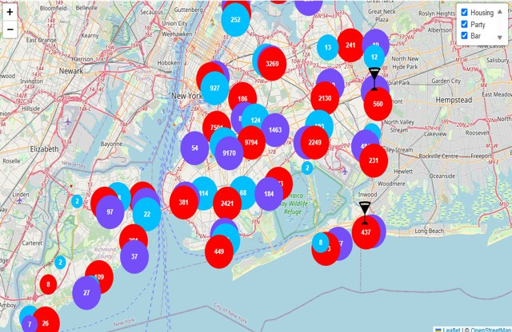

This project started as a school assignment, where the task
was to visualize public data from two CSV files (Comma Separated Values) in a
meaningful way. Initially, I was focused on creating some basic visualizations that
would help users understand trends and patterns in the data. It seemed like a
straightforward assignment to practice using standard web technologies.
However, as I dove into the project, I realized I wanted to go beyond the basics.
Why stop at 2 datasets? I tried my hand at 3. Instead of just producing static
charts, I created an interactive web application that would allow users to truly
engage with the data. I decided to push again and incorporate dynamic maps to show
how data is distributed across New York, and I used D3.js to build charts that users
could interact with and filter in real-time.
What started as a simple school project
quickly grew into something much more. I ended up creating a tool that not only
visualizes data but also helped me to discover some insights on Chicago for my own.
This project became a way for me to bring data to life, transforming an interesting
assignment into a powerful, enjoyable experience that I’m proud of.
Check It Out

Features:
Interactive Map Visualization:
- CSV Data on Map: Display public data from Chicago on a map, allowing users to visualize and explore the geographical distribution of the data.
- Dynamic Interaction: Users can interact with the map to view detailed information about specific data points.
D3.js Charts:
- Dynamic Charts: Generate dynamic, interactive charts using D3.js to represent various datasets, providing clear and insightful visualizations.
- Data Filtering: Users can filter data directly on the charts to explore specific subsets of information.
Technologies Used:
- D3.js: A powerful JavaScript library used for creating dynamic and interactive data visualizations in the form of charts and graphs.
- Leaflet.js: A JavaScript library used for creating mobile-friendly interactive maps, enabling the visualization of CSV data on a map.
- CSV & JSON: Data is stored and managed in CSV and JSON formats, ensuring compatibility and ease of use for data visualization.
GitHub Repository